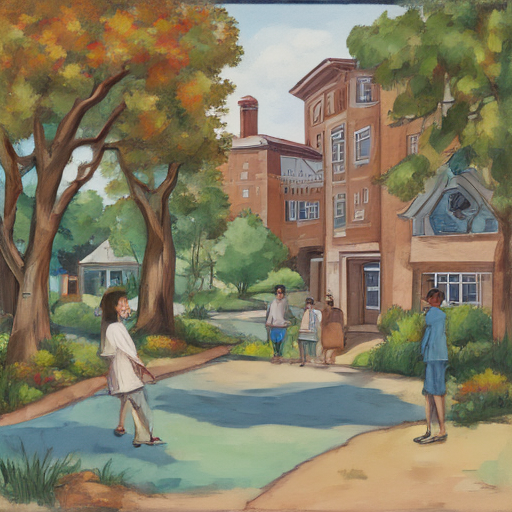

Today at the University of Mississippi, I met Nima Momeni who's a friend of my brother. He was visiting to give a talk about his research in computational biology. Afterward, we decided to take a walk around campus and he mentioned that he used to live in our house back in 2015 when he was just starting out at the university. It was surreal to see where he had begun his academic journey, feeling grateful for the place I'm currently living now.

Keywords: University of Mississippi, Nima Momeni, US House blocks
Fictional diary entry.